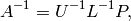
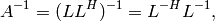

Factorization-based inversion¶
General inversion¶
This routine computes the in-place inverse of a general fully-populated
(invertible) matrix  as
as

where  is the result of LU factorization with partial pivoting.
The algorithm essentially factors , inverts
is the result of LU factorization with partial pivoting.
The algorithm essentially factors , inverts  in place,
solves against
in place,
solves against  one block column at a time, and then applies the
row pivots in reverse order to the columns of the result.
one block column at a time, and then applies the
row pivots in reverse order to the columns of the result.
- void Inverse(Matrix<F>& A)¶
Overwrites the general matrix A with its inverse.
- void Inverse(DistMatrix<F>& A)¶
The same as above, but for distributed matrices.
HPD inversion¶
This routine uses a custom algorithm for computing the inverse of a
Hermitian positive-definite matrix as

where is the lower Cholesky factor of (the upper Cholesky
factor is computed in the case of upper-triangular storage). Rather than
performing Cholesky factorization, triangular inversion, and then the Hermitian
triangular outer product in sequence, this routine makes use of the single-sweep
algorithm described in Bientinesi et al.’s “Families of algorithms related to the
inversion of a symmetric positive definite matrix”, in particular, the variant 2
algorithm from Fig. 9.
If the matrix is found to not be HPD, then a NonHPDMatrixException is thrown.
- void HPDInverse(UpperOrLower uplo, Matrix<F>& A)¶
Overwrite the uplo triangle of the HPD matrix A with the same triangle of the inverse of A.
- void HPDInverse(UpperOrLower uplo, DistMatrix<F>& A)¶
Same as above, but for a distributed matrix.
Triangular inversion¶
Inverts a (possibly unit-diagonal) triangular matrix in-place.
- void TriangularInverse(UpperOrLower uplo, UnitOrNonUnit diag, Matrix<F>& A)¶
Inverts the triangle of A specified by the parameter uplo; if diag is set to UNIT, then A is treated as unit-diagonal.
- void TriangularInverse(UpperOrLower uplo, UnitOrNonUnit diag, DistMatrix<F>& A)¶
Same as above, but for a distributed matrix.